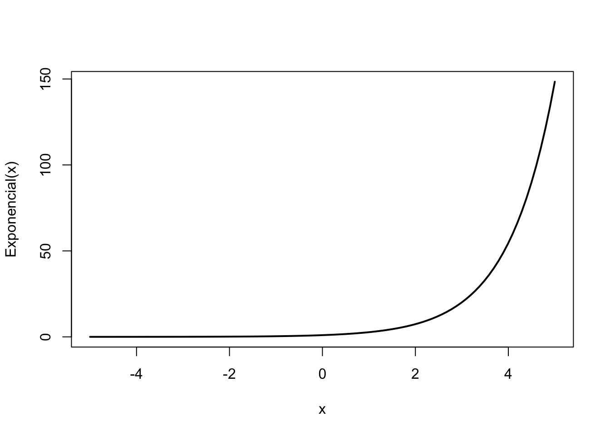

Saindo do universo dos modelos lineares, começamos a nos aventurar nos modelos linares generalizados (generalized linear models - GLM). O segundo deles é a regressão de Poisson.
Uma regressão de Poisson se comporta exatamente como um modelo linear: faz uma predição simplesmente computando uma soma ponderada das variáveis independentes, mais uma constante. Porém ao invés de retornar um valor contínuo, como a regressão linear, retorna o logarítmo natural desse valor.
\[\log(y)= \theta_0 + \theta_1 x_1 + \theta_2 x_2 + \dots + \theta_n x_n\] que é o mesmo que
\[y = e^{(\theta_0 + \theta_1 x_1 + \theta_2 x_2 + \dots + \theta_n x_n)}\] Regressão de Poisson é usada quando a nossa variável dependente só pode tomar valores positivos e discretos (número inteiros), geralmente em contextos de dados de contagem.
x <- seq(-5, 5, length.out = 100)
plot(x, exp(x), type = "l", lwd=2, ylab = "Exponencial(x)")
rstanarmO rstanarm pode tolerar qualquer modelo linear generalizado e regressão de Poisson não é uma exceção. Para rodar um modelo de Poisson no rstanarm é preciso simplesmente alterar o argumento family da função stan_glm.
Para exemplo, usaremos um dataset chamado roaches do pacote rstanarm. É uma base de dados com 262 observações sobre a eficácia de um sistema de controle de pragas em reduzir o número de baratas (roaches) em apartamentos urbanos.
Possui as seguintes variáveis:
y: variável dependente - número de baratas mortasroach1: número de baratas antes da dedetizaçãotreatment: dummy para indicar se o apartamento foi dedetizado ou nãosenior: dummy para indicar se há apenas idosos no apartamentoexposure2: número de dias que as armadilhas de baratas foram usadasoptions(mc.cores = parallel::detectCores())
options(Ncpus = parallel::detectCores())
library(rstanarm)
data(roaches)
model_poisson <- stan_glm(
y ~ roach1 + treatment + senior,
data = roaches,
family = poisson()
)summary(model_poisson)##
## Model Info:
## function: stan_glm
## family: poisson [log]
## formula: y ~ roach1 + treatment + senior
## algorithm: sampling
## sample: 4000 (posterior sample size)
## priors: see help('prior_summary')
## observations: 262
## predictors: 4
##
## Estimates:
## mean sd 10% 50% 90%
## (Intercept) 3.1 0.0 3.1 3.1 3.2
## roach1 0.0 0.0 0.0 0.0 0.0
## treatment -0.5 0.0 -0.5 -0.5 -0.5
## senior -0.4 0.0 -0.4 -0.4 -0.3
##
## Fit Diagnostics:
## mean sd 10% 50% 90%
## mean_PPD 25.6 0.4 25.1 25.6 26.2
##
## The mean_ppd is the sample average posterior predictive distribution of the outcome variable (for details see help('summary.stanreg')).
##
## MCMC diagnostics
## mcse Rhat n_eff
## (Intercept) 0.0 1.0 3964
## roach1 0.0 1.0 3853
## treatment 0.0 1.0 3792
## senior 0.0 1.0 2953
## mean_PPD 0.0 1.0 3234
## log-posterior 0.0 1.0 1857
##
## For each parameter, mcse is Monte Carlo standard error, n_eff is a crude measure of effective sample size, and Rhat is the potential scale reduction factor on split chains (at convergence Rhat=1).Ao vermos a fórmula de regressão de Poisson vemos que para analisarmos o efeito de um preditor na variável dependente temos que calcular o valor \(e\) elevado ao coeficiente do preditor
\[y = e^{(\theta_0 + \theta_1 x_1 + \theta_2 x_2 + \dots + \theta_n x_n)}\]
coeff <- exp(model_poisson$coefficients)
coeff## (Intercept) roach1 treatment senior
## 22.99 1.01 0.60 0.69(Intercept): a taxa basal de exterminação das baratas \(y\)roach1: a cada uma barata antes da exterminação há um aumento de 1.01 barata exterminada a maistreatment: se o apartamento foi dedetizado há um aumento de 0.6 barata exterminada a maissenior: se o apartamento possui somente idoso há um aumento de 0.69 barata exterminada a maisrstanarm possui as seguintes configurações como padrão de priors para regressão de Poisson:
prior_intercept = normal(0, 2.5 * sd_y)prior = normal(0, 2.5 * 1/sd_xk)prior_aux): uma distribuição exponencial com taxa \(\frac{1}{\sigma_y}\): prior_aux = exponential(1/sd_y)Um datasets está disponível na pasta datasets/:
datasets/NYC_bicycle.csv###sessionInfo()## R version 4.0.3 (2020-10-10)
## Platform: x86_64-apple-darwin17.0 (64-bit)
## Running under: macOS Big Sur 10.16
##
## Matrix products: default
## LAPACK: /Library/Frameworks/R.framework/Versions/4.0/Resources/lib/libRlapack.dylib
##
## locale:
## [1] en_US.UTF-8/en_US.UTF-8/en_US.UTF-8/C/en_US.UTF-8/en_US.UTF-8
##
## attached base packages:
## [1] stats graphics grDevices utils datasets methods base
##
## other attached packages:
## [1] carData_3.0-4 gapminder_0.3.0 skimr_2.1.2 rstanarm_2.21.1 Rcpp_1.0.5 readxl_1.3.1
##
## loaded via a namespace (and not attached):
## [1] nlme_3.1-150 matrixStats_0.57.0 xts_0.12.1 threejs_0.3.3 rstan_2.21.2 repr_1.1.0
## [7] tools_4.0.3 utf8_1.1.4 R6_2.5.0 DT_0.16 colorspace_2.0-0 withr_2.3.0
## [13] tidyselect_1.1.0 gridExtra_2.3 prettyunits_1.1.1 processx_3.4.5 curl_4.3 compiler_4.0.3
## [19] cli_2.2.0 shinyjs_2.0.0 labeling_0.4.2 colourpicker_1.1.0 scales_1.1.1 dygraphs_1.1.1.6
## [25] ggridges_0.5.2 callr_3.5.1 stringr_1.4.0 digest_0.6.27 StanHeaders_2.21.0-6 minqa_1.2.4
## [31] rmarkdown_2.5 base64enc_0.1-3 pkgconfig_2.0.3 htmltools_0.5.0 lme4_1.1-26 highr_0.8
## [37] fastmap_1.0.1 htmlwidgets_1.5.2 rlang_0.4.9 shiny_1.5.0 farver_2.0.3 generics_0.1.0
## [43] zoo_1.8-8 jsonlite_1.7.1 crosstalk_1.1.0.1 gtools_3.8.2 dplyr_1.0.2 inline_0.3.17
## [49] magrittr_2.0.1 loo_2.3.1 bayesplot_1.7.2 Matrix_1.2-18 munsell_0.5.0 fansi_0.4.1
## [55] lifecycle_0.2.0 stringi_1.5.3 yaml_2.2.1 MASS_7.3-53 pkgbuild_1.1.0 plyr_1.8.6
## [61] grid_4.0.3 parallel_4.0.3 promises_1.1.1 crayon_1.3.4 miniUI_0.1.1.1 lattice_0.20-41
## [67] splines_4.0.3 knitr_1.30 ps_1.4.0 pillar_1.4.7 igraph_1.2.6 boot_1.3-25
## [73] markdown_1.1 shinystan_2.5.0 reshape2_1.4.4 codetools_0.2-18 stats4_4.0.3 rstantools_2.1.1
## [79] glue_1.4.2 evaluate_0.14 V8_3.4.0 RcppParallel_5.0.2 nloptr_1.2.2.2 vctrs_0.3.5
## [85] httpuv_1.5.4 cellranger_1.1.0 tidyr_1.1.2 gtable_0.3.0 purrr_0.3.4 assertthat_0.2.1
## [91] ggplot2_3.3.2 xfun_0.19 mime_0.9 xtable_1.8-4 later_1.1.0.1 survival_3.2-7
## [97] rsconnect_0.8.16 tibble_3.0.4 shinythemes_1.1.2 statmod_1.4.35 ellipsis_0.3.1